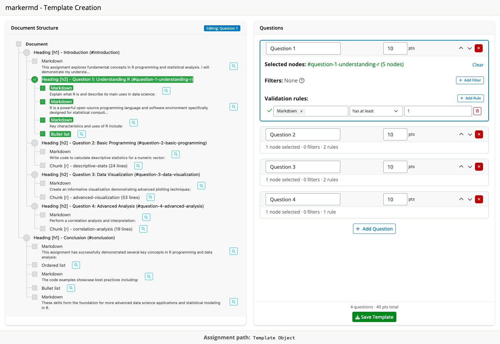
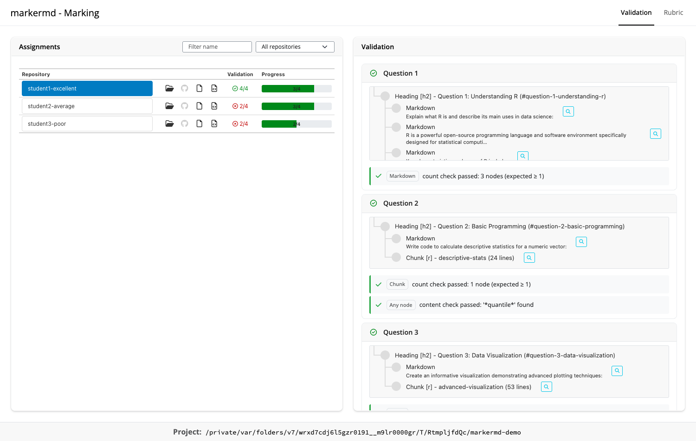
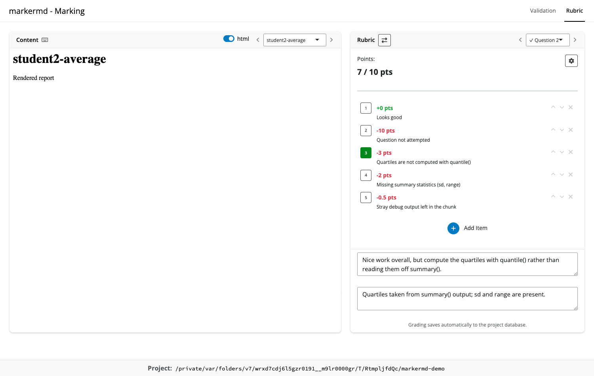

markermd is a Shiny-based grading environment for assignments submitted as git repositories containing Quarto (.qmd) or R Markdown (.Rmd) documents, such as the classroom layouts produced by ghclass’s org_grade_assignment(). Each submission is parsed into a document tree (via q2r), validated against the structural requirements of the assignment, and graded question by question with a fast, hotkey-driven rubric interface. Everything (the template, the rubric, and all recorded grading) lives in a per-project SQLite database.
The package is built around two apps:
-
template()authors a grading template: which document sections are the questions, and what structural rules each answer must satisfy. -
mark()grades a collection of student repositories against that template with per-question rubrics.
Around the apps, a set of helper functions (validate_project(), template_import() / template_export(), rubric_import() / rubric_export(), marks_import() / marks_export() / marks_set()) makes the entire workflow scriptable, and bundled Claude Code skills can scaffold the template and rubric or apply the rubric across all submissions as a first pass for human review.
Experimental status
This package is experimental: APIs may change significantly and some features are incomplete.
This project is also an ongoing experiment in “vibe” coding with Claude Code. Not all implementation details have been thoroughly evaluated and there is a lot of wonkiness throughout the codebase.
Installation
You can install the development version of markermd from GitHub:
# Install from GitHub
# install.packages("pak")
pak::pak("rundel/markermd")
# Or using remotes
remotes::install_github("rundel/markermd")Dependencies
markermd relies on q2r for parsing Quarto documents. q2r wraps the Quarto parser via Rust, so a Rust toolchain (rustc >= 1.85) is required to install it:
remotes::install_github("rundel/q2r")Quick start
A markermd project is a directory containing the student repositories, and optionally a solution (key) repository and rendered reports:
hw01/
├── repos/
│ ├── student1-hw01/
│ │ └── assignment.qmd
│ ├── student2-hw01/
│ └── ...
├── html/ # rendered reports, shown while grading
└── hw01-key/ # solution repository (optional)
library(markermd)
# One-time setup: writes .markermd/config.yml, creates the grading
# database, and installs the bundled Claude Code skills
init_project("hw01")
# Author the grading template (questions + validation rules)
template("hw01")
# Grade the student repositories
mark("hw01")init_project() detects the key repository and artifact directories, records everything in hw01/.markermd/config.yml, and creates the SQLite database that stores the template, rubric, and all grading. project_sitrep() prints an overview of a project’s configuration at any point.
Template creation with template()
The template app loads an assignment (a project’s key repository, a single .qmd/.Rmd file or directory, a saved template, or a GitHub <owner>/<repo>) and displays its structure as an interactive tree. Headings are the selectable units: selecting one maps the document section beneath it to a question. Each question then gets validation rules (counts of chunks, markdown blocks, or other node types; content checks; name checks) along with optional filters that narrow which nodes the rules see, plus a point value used later by the rubric.

When the app is opened on an initialized project, saving writes the template directly into the project database, ready for grading.
Grading with mark()
mark() opens an initialized project and sources everything from it: the student repositories, the stored template, the grading database, and each repository’s rendered reports.
Validation
The Validation tab checks every repository against the template’s rules, so structural problems (missing sections, missing chunks, absent content) are visible before any grading starts. The assignment table tracks per-repository validation status and grading progress.

Rubric
The Rubric tab is where grading happens. The left pane shows the student’s rendered report or source; the right pane shows the current question’s rubric. Items toggle by click or number-key hotkey, and the score follows from the question’s scoring setup (additive or deduction mode, with optional clamping between zero and the question total). Below the items are two comment boxes: a public, student-facing comment (which also marks the question as graded) and private notes that are never shared with students. Every action autosaves to the project database.

Rubric items can be added, edited, and reordered while grading, and the rubric pane’s menu offers YAML import and export for editing the rubric outside the app.
Scripting the workflow
Everything the apps do is also available headlessly:
# Check every student repository against the stored template
validate_project("hw01")
# Templates, rubrics, and recorded marks round trip between the
# project database and editable YAML files
template_export("hw01-template.yaml", project = "hw01")
rubric_import("hw01-rubric.yaml", project = "hw01")
marks_export("hw01-marks.yaml", project = "hw01")
# Record marks for a single repository/question pair
marks_set("student1-hw01", "Question 2",
items = "Looks good",
private_comment = "Quartiles and summary statistics all present.",
project = "hw01"
)The YAML formats are validated against bundled JSON Schemas (see system.file("schema", package = "markermd")) and are deliberately simple enough for LLM tools to author. Marks imports are conservative by default: repository/question pairs that already have grading activity are skipped unless explicitly overwritten.
Claude Code skills
init_project() installs three Claude Code skills into the project’s .claude/skills/ directory:
-
markermd-scaffold-template: builds a starter grading template from the key repository’s assignment document. -
markermd-scaffold-rubric: drafts per-question rubric items and scoring from the key, optionally sampling student submissions to anticipate common mistakes. -
markermd-apply-rubric: applies the stored rubric to every student repository as a first-pass machine grading, recording its reasoning as private notes for human review inmark().
See inst/skills/README.md for details and per-user installation.